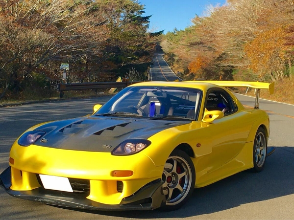
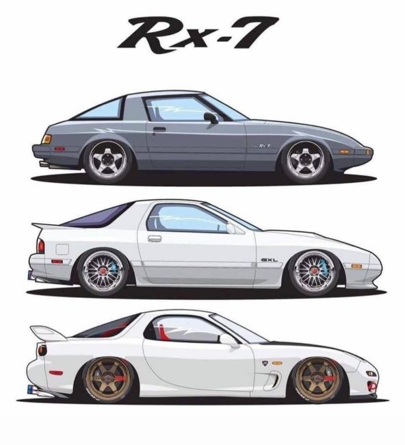
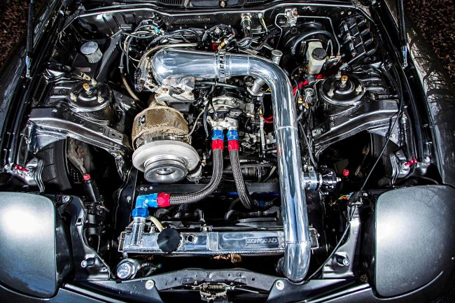
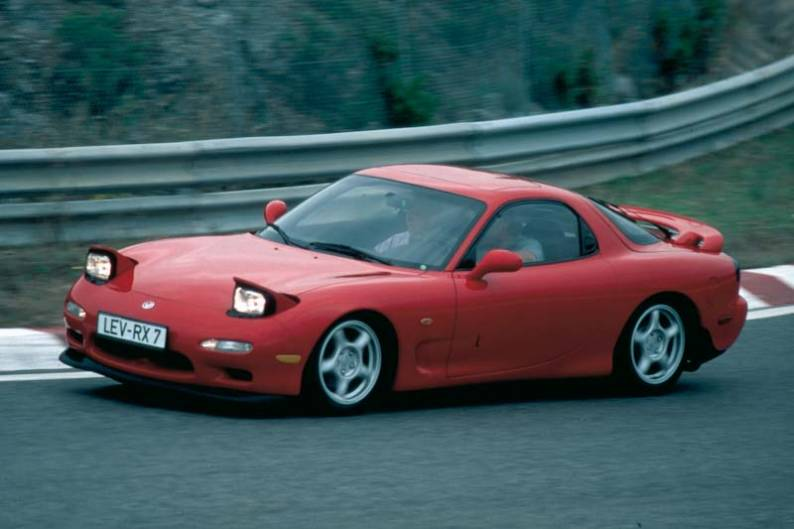

Opis Mazda RX-7
Mazda RX-7 je sportski automobil s prednjim motorom, pogonom na zadnje točkove i rotirajućim motorom koji je Mazda proizvodila i plasirala na tržište od 1978. do 2002. kroz tri generacije, od kojih su sve koristile kompaktni, lagani Wankel rotacijski motor.

Historija Mazda RX-7
Prva generacija RX-7, koja se ponekad naziva SA (rani) i FB (kasni), je hachback kupe sa dva sjedišta i dvoja vrata. Imao je 12A rotacioni motor sa rasplinjačem, kao i opciju za 13B rotacioni motor sa elektronskim ubrizgavanjem goriva u kasnijim godinama.
Druga generacija RX-7, koja se ponekad naziva i FC, bila je nuđena kao kupe sa dva sjedišta sa opcijom 2+2 dostupnom na nekim tržištima, kao i sa kabrioletom. Ovo je pokretao rotacioni motor 13B, koji se nudio u formi sa prirodnim usisavanjem ili turbo punjenjem.
RX-7 treće generacije, koji se ponekad naziva i FD, nudio je kupe sa 2+2 sjedišta sa ograničenom serijom opcije sa dva sjedišta. Neka tržišta su bila dostupna samo kao dvosjed. Imao je 13B REW motor sa sekvencijalnim turbo punjenjem.

Specifikacije Mazda RX-7
- Motor: 12A ili 13B rotacioni motor
- Pogon: Prednji motor, pogon na zadnje točkove (RWD)
- Ručno mjenjač: 5-brzinski ručni mjenjač
- Težina: Varira od 950 kg do 1300 kg
- Turbo opcija: Dostupno na odabranim modelima (FC i FD generacija)
- Visoki broj obrtaja: Do 9000 o/min

Naslijeđe Mazda RX-7
RX-7 nastavlja da inspiriše Mazdu RX-8 (2003–2012), sportski automobil sa rotacionim motorom koji je Mazda proizvodila i plasirala na tržište. RX-8 je zadržao mnoge karakteristike RX-7, ali sa poboljšanjima u dizajnu i performansama.
Više od 800.000 RX-7 proizvedeno je tokom njegovog životnog vijeka, ostavljajući dubok trag u automobilskom naslijeđu i motorsportu.
